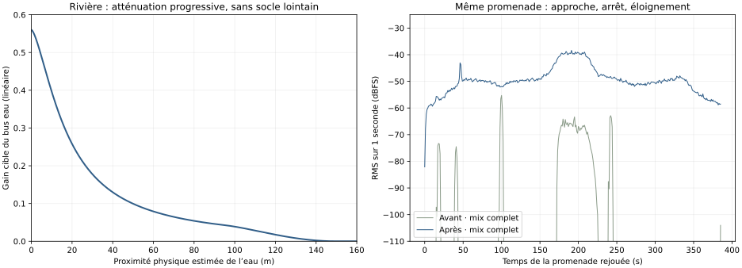

Écoutez les extraits au même volume. Ils conservent les gains du jeu : aucun nivellement n’a été appliqué pour rendre les anciens sons artificiellement plus forts. Les moments de silence restent présents.
Évaluation acoustique du propriétaire attendue. Les mesures ne prouvent ni le réalisme, ni une écoute humaine. Le Jalon C n’a pas commencé.
Rapport et prévisualisation · Comparaisons visuelles du Jalon A · Promenade 3D (WebGL requis) · Sources et licences
Véritable AudioContext du jeu, station forestière fixe, quatre voix d’oiseaux démarrées naturellement pendant la capture. Le rendu 3D a été suspendu pour limiter le coût de SwiftShader ; la boucle du jeu, le vent partagé et la programmation sonore continuent. Ce fichier utilise MediaRecorder ; ce n’est pas un rendu hors ligne.

La promenade suit le graphe OSM du jeu, puis une courte approche libre vérifiée avec le relief et les collisions ; elle ne certifie pas un chemin réel. Les captures comparatives sont rejouées dans le même moteur audio hors ligne. La largeur et le débit actuels de l’Anglin ne sont pas inventés.
Les comparaisons utilisent les mêmes positions, dates, météos, volume maître et graines de programmation, avec cache préparé. Le temps, le vent et les contextes géographiques viennent du jeu. Sortie du même AcousticRenderer/SoundDirector dans OfflineAudioContext ; fichiers de revue Opus 96 kbit/s, sans normalisation. Les niveaux dBFS sont numériques, pas des dB acoustiques au casque.
Niveaux et événements · Courbe de gain · Captures avant · Captures après · Capture temps réel · Tests navigateur · Budgets et coûts CPU · Préservation des ressources 10.1
Les prises de son proviennent d’autres lieux ; elles interprètent l’ambiance du pilote. Leurs microvariations ne constituent pas des mesures du vent ou du débit locaux. Aucun son de remplissage généré, aucune espèce observée revendiquée et aucune validation artistique humaine enregistrée.